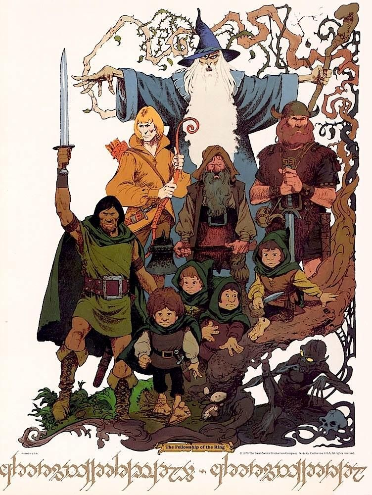
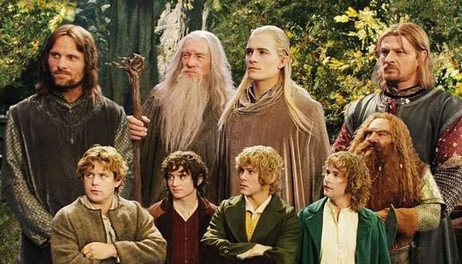
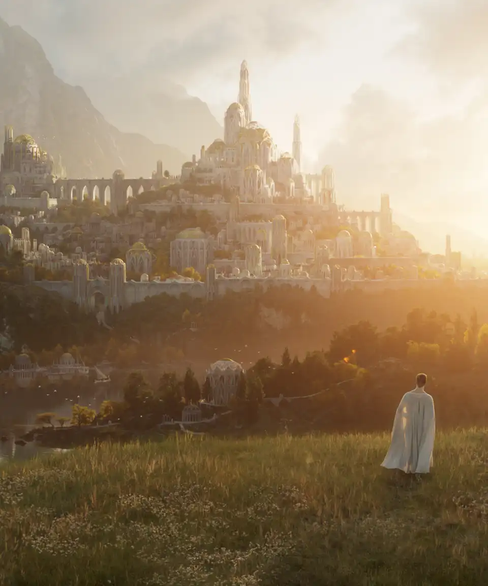

The Lord of the Rings was originally published in 1954 and 1955. Specifically, The Fellowship of the Ring and The Two Towers were released in 1954 while The Return of the King came out in 1955. These books were meant to be a sequel to The Hobbit, which was published in 1937.
In 1955 and 1956, BBC created a 12-part radio adaptation of the books to be broadcasted. There are no recordings of this.

The first film adaptation of The Lord of thr Rings appeared in 1978 by animator Ralph Bakshi. This only covered The Fellowship of the Ring and The Two Towers.
The second film adaptation was created in 1980 by Rankin-Bass as an animated television special for The Return of the King.

The third, and most popular, film adaptation was the live action production directed by Peter Jackson. This was released in three installments from 2001-2003.
The Hobbit trilogy, also directed by Peter Jackson, were released from 2012-2014. In combination with The Lord of the Rings, the Peter Jackson films represent the most awarded film series in history.

Amazon Prime is currently filming a television show based on events in the Second Age of the Tolkien Universe, before the events of The Hobbit.